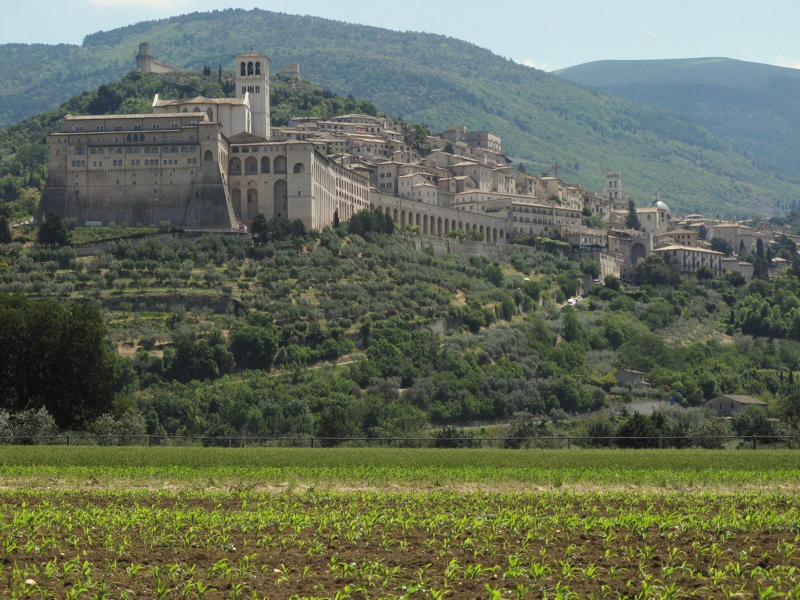
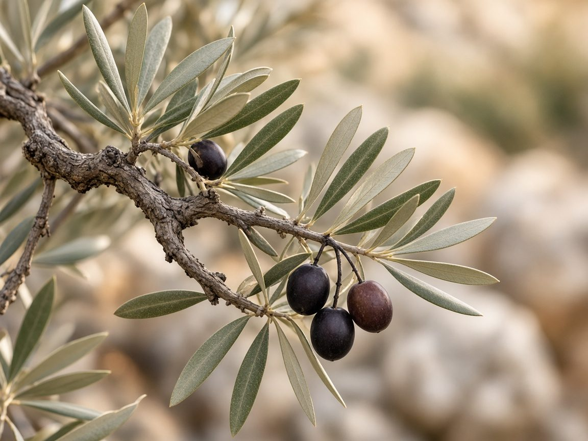
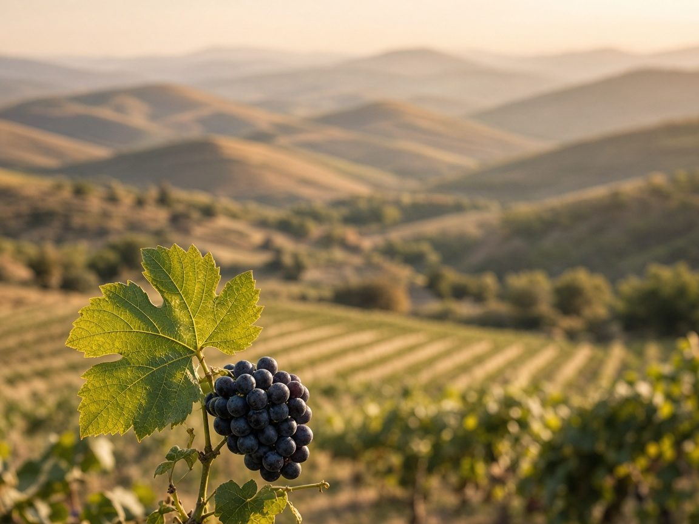
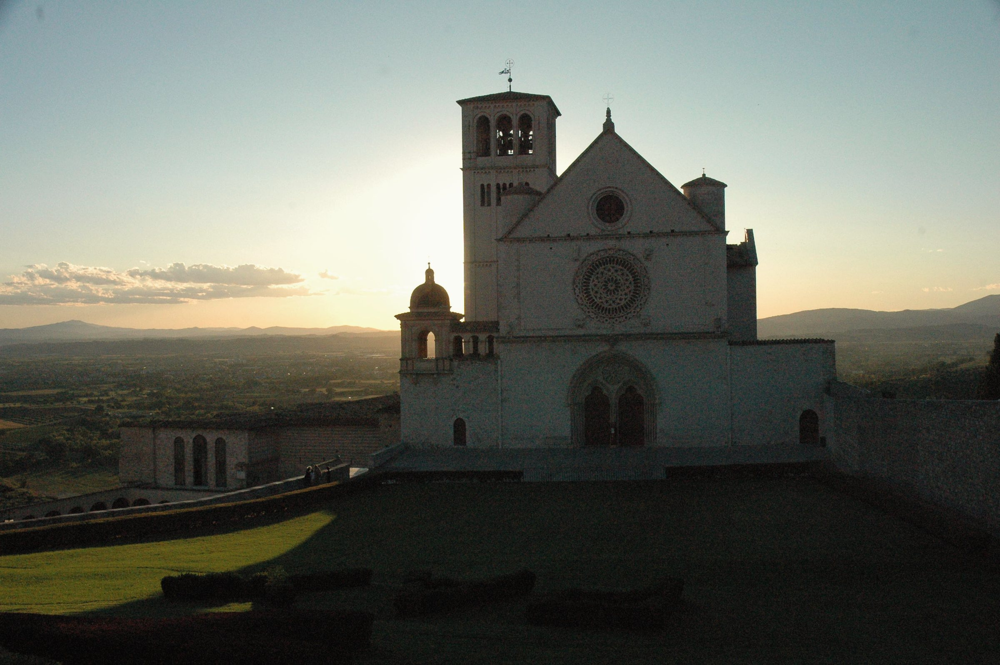
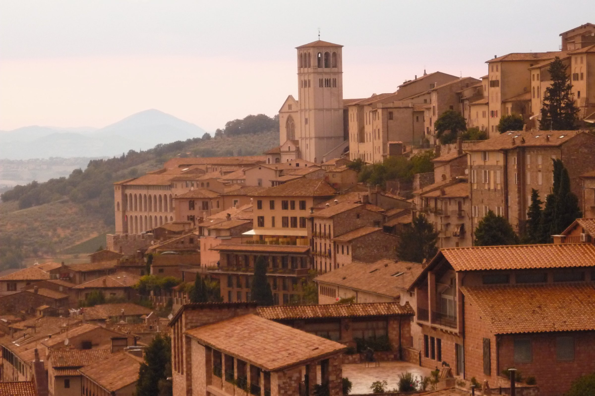

A sacred art school in Assisi to form artists, disciples, and a more beautiful world.
Explore the 2027 SessionsStudy of Mary at the Foot of the Cross, silverpoint · Mark Balma
The first season opens in 2027 · Spring and Autumn
The focus of the school is finding the sacred and spiritual in art through the study of God's creation. For a season, allievi (students) live at the villa in the foothills of Assisi, working in the bottega (workshop) alongside the maestro.
The school rests on three words: Bellezza · Bontà · Verità, beauty, goodness and truth. Every discipline is ordered to them, and to what Mark calls “the spirit in art that brings us all closer to God.”
For many years, Mark Balma called Assisi home. Here, among its ancient streets, sacred landscapes, and enduring friendships, he found both a sanctuary for his art and a community that nourished his spirit. It was a place where faith, beauty, and the artist’s vocation came together.
“My house was on the road St. Francis would walk to Gubbio.”Mark Balma, of his earlier home near Assisi
Spring and Autumn 2027 · Applications are open
6 weeks
The full season: time to carry a buon fresco from drawing to cartoon to wet plaster.
3 weeks
The first or second half of a season.
Nightly stays
Rest in the foothills of Assisi, where the villa becomes a quiet haven for prayer and retreat. Write to us for availability.
Students will learn the discipline of drawing, hand-eye coordination, and the observation of light and shadow while incorporating methods of the Old Masters: pencil, charcoal, silverpoint, red/black chalk and ink.
Mark Balma instructs students in the use of egg tempera and oil painting as practiced in 15th-century Europe by the Flemish Masters and Leonardo da Vinci. Accomplished students will also learn the art of buon fresco, working directly with Mark Balma on fresco murals.
In La Cappella, the old stable becoming a chapel.
Breakfast together.
Demonstration and practice beside the maestro: drawing, tempera, oil or buon fresco.
The shared table in the vaulted refectory.
Quiet time to pray, meditate and rest.
A second studio session, or drawing in the Umbrian landscape.
Evening prayer in La Cappella.
Dinner at the chef’s table, outdoors in good weather.
Silence, conversation, rest.
Once a week, a day of pilgrimage in the land of saints and masters, to be confirmed.
A sample day · to be confirmed
An Italian villa in the fields below Assisi: a working atelier, shared meals, prayer, and the Umbrian countryside.


Students work alongside the maestro in his own studio, and accomplished students join him on fresco murals.

A chef’s table in the vaulted refectory, and outdoor dining.

In Mark's words: “The old stable will become a chapel. I am using all the old wooden mangers as materials for the benches, and it will also have a few frescoes!” Mass and prayer schedule: to be announced

The fields and foothills below Assisi, in the Umbrian countryside.


Assisi Is Your Classroom
Pilgrimages & Cultural Excursions
An education at IMITATIO extends far beyond the walls of the villa. Students have opportunities for intimate day trips and mini-pilgrimages through the breathtaking landscapes of Umbria, discovering ancient hilltop towns, magnificent churches, sacred art, and centuries of living history.

Rome, the Eternal City, offers an extraordinary pilgrimage into the heart of the Church and the masterpieces of Western civilization. Closer to home, the picturesque villages and historic sanctuaries surrounding Assisi invite exploration, reflection, and discovery.
Here, travel becomes part of the education—an opportunity to encounter the beauty, faith, and culture that have inspired artists for centuries.


.jpg){kind=link}